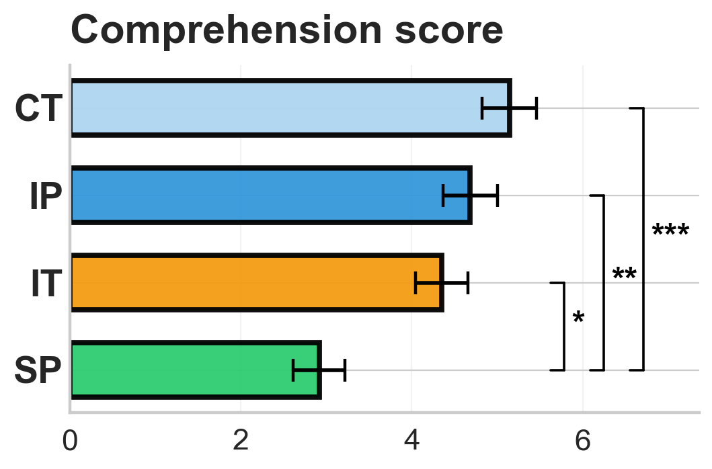
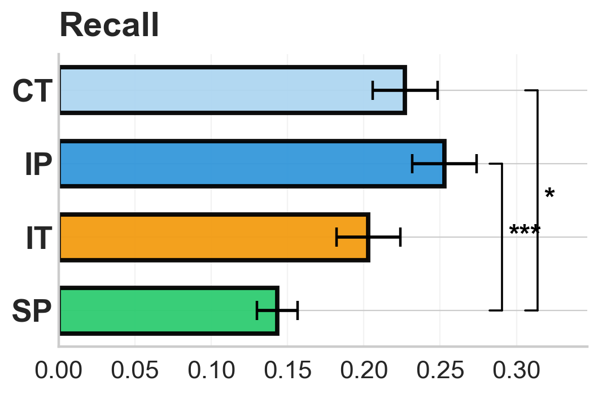

We tested whether post-scan comprehension and free-recall performance differed across the four between-subjects conditions (continuous, intact-pause, intact-theory-of-mind, scrambled-pause). Each measure was analyzed with a one-way between-subjects ANOVA; pairwise differences were then evaluated with Welch two-sample t-tests (unequal variances), Bonferroni-corrected across the six pairs. Bar plots show condition means with SEM error bars. Sample sizes vary across measures because comprehension and recall responses were not collected from every scanned participant; per-cell n is in the stats tables.
Omnibus one-way ANOVA: F(3, 55) = 8.0111, p < .001.
Primary stats (unshaded) | Descriptive / context (light gray)
| Cond | n | M | SD | 95% CI | Pairwise t-test (Bonferroni-corrected p) | |||
|---|---|---|---|---|---|---|---|---|
| vs CT | vs IP | vs IT | vs SP | |||||
| CT | 7 | 5.14 | 0.84 | [4.37, 5.92] | — | t(17.7)=1.02 p=1.000 | t(17.1)=1.80 p=0.534 | t(16.5)=5.09 p=0.001 |
| IP | 18 | 4.69 | 1.34 | [4.02, 5.35] | t(17.7)=-1.02 p=1.000 | — | t(34.0)=0.76 p=1.000 | t(32.0)=4.05 p=0.002 |
| IT | 18 | 4.35 | 1.29 | [3.71, 4.99] | t(17.1)=-1.80 p=0.534 | t(34.0)=-0.76 p=1.000 | — | t(31.9)=3.35 p=0.013 |
| SP | 16 | 2.92 | 1.21 | [2.27, 3.56] | t(16.5)=-5.09 p=0.001 | t(32.0)=-4.05 p=0.002 | t(31.9)=-3.35 p=0.013 | — |

Comprehension score by condition. Bars show the mean post-scan comprehension score in each condition (CT, continuous; IP, intact-pause; IT, intact-theory-of-mind; SP, scrambled-pause); error bars are ±1 standard error of the mean across participants. Brackets with asterisks denote Bonferroni-corrected pairwise Welch two-sample t-tests (unequal variances) (* p < 0.05, ** p < 0.01, *** p < 0.001). Per-condition n is listed in the table above.
Omnibus one-way ANOVA: F(3, 67) = 5.9538, p = .001.
Primary stats (unshaded) | Descriptive / context (light gray)
| Cond | n | M | SD | 95% CI | Pairwise t-test (Bonferroni-corrected p) | |||
|---|---|---|---|---|---|---|---|---|
| vs CT | vs IP | vs IT | vs SP | |||||
| CT | 16 | 0.23 | 0.09 | [0.18, 0.27] | — | t(32.7)=-0.86 p=1.000 | t(31.8)=0.81 p=1.000 | t(25.4)=3.35 p=0.015 |
| IP | 19 | 0.25 | 0.09 | [0.21, 0.30] | t(32.7)=0.86 p=1.000 | — | t(35.0)=1.67 p=0.619 | t(29.9)=4.39 p=0.001 |
| IT | 18 | 0.20 | 0.09 | [0.16, 0.25] | t(31.8)=-0.81 p=1.000 | t(35.0)=-1.67 p=0.619 | — | t(28.6)=2.42 p=0.134 |
| SP | 18 | 0.14 | 0.06 | [0.12, 0.17] | t(25.4)=-3.35 p=0.015 | t(29.9)=-4.39 p=0.001 | t(28.6)=-2.42 p=0.134 | — |

Free-recall score by condition. Bars show the mean free-recall score in each condition (CT, continuous; IP, intact-pause; IT, intact-theory-of-mind; SP, scrambled-pause); error bars are ±1 standard error of the mean across participants. Brackets with asterisks denote Bonferroni-corrected pairwise Welch two-sample t-tests (unequal variances) (* p < 0.05, ** p < 0.01, *** p < 0.001). Per-condition n is listed in the table above.